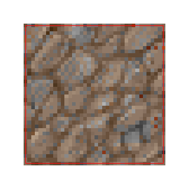
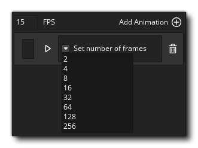
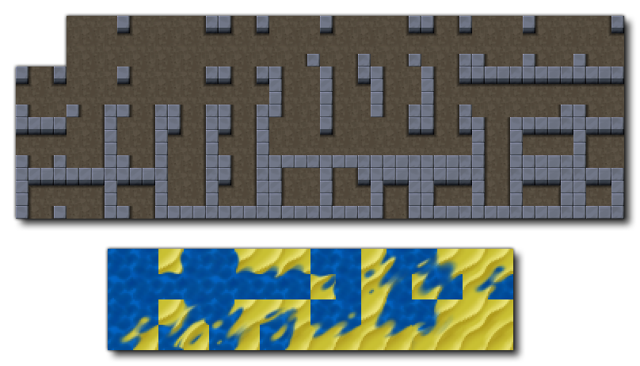
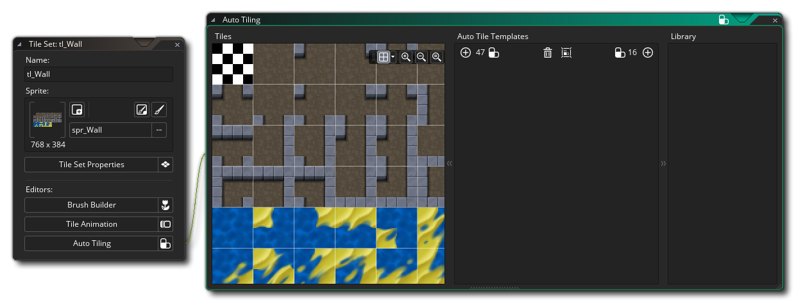
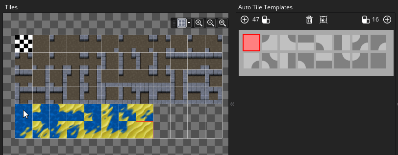

图块集是一种图形资源，用于绘制游戏的关卡和其他静态组件。图块集由单个图像组成，然后将其分割为不同的 “单元” (图块)，每个图块可以放入房间编辑器中创建一个完整的图像。下面你可以看到两个可以用作图块集的示例精灵:
图块集是一种图形资源，用于绘制游戏的关卡和其他静态组件。图块集由单个图像组成，然后将其分割为不同的 “单元” (图块)，每个图块可以放入房间编辑器中创建一个完整的图像。下面你可以看到两个可以用作图块集的示例精灵: 
这些是人们创建图块集的最常见方式 - 要么全部挤在一起（无缝），要么用很小的空隙（比如一个像素的线条）将它们分开，GameMaker Studio 2 可以处理这两种类型。 基本上所有的图块集必须由符合明确定义的网格的图像组成，网格的每个单元格大小完全相同（请注意，虽然上面显示的图像都是由正方形图块组成，但图块组也可以由长方形图块组成）。在创建图块集时，请记住左上角的网格单元格必须 始终 为空，因为此单元格将被 GameMaker Studio 2 用于房间中 “空” 图块——擦除现有图块（即使在图像的这一部分有像素，它们也会被忽略）。
首次创建图块集资源时，将使用以下选项打开图块集编辑器窗口：
在这里，你可以为你的图块集命名。名称只能由字母、数字下划线 “_” 符号组成，并且不能以数字开头。
在这里，你可以选择从中创建图块集的精灵资源。 单击主按钮将打开 资源浏览器，你可以在其中选择要用于图块集的精灵：
你还可以单击 新的精灵 按钮
创建一个新的精灵资源（它将为工作区内的新资源打开精灵编辑器进行编辑），或者你可以使用 编辑精灵 按钮
编辑当前选择的精灵，甚至通过按下
按钮在图像编辑器中选择编辑精灵图像本身。
默认情况下，当你打开图块集时，也会显示 “图块集属性” 窗口（如下所示），但如果你将其关闭，则可以单击此处的按钮再次重新打开。
“图块集属性”窗口用于指定基本图块大小（默认为 16 平方像素），偏移量和图块之间的间隔（这两个选项适用于上面所示各个部分之间存在间隙的图块的精灵）。你还可以为图块集图像设置 输出边界 值，该图像控制图像将如何存储在磁盘上，并根据需要在每个图块周围添加额外的像素。
由于图块的渲染方式，需要事先准备图块，并在每个边框周围 “涂抹” 边框。下图显示了图块通常如何通过设备图形驱动程序进行映射，图块周围的红线显示 U,V 坐标映射到的位置（字母 “U” 和 “V” 用于描述 2D纹理网格因为 “X”、“Y” 和 “Z” 已用于描述房间和物体的空间坐标）： 
正如你所看到的那样，它会选择纹理的中心（纹理像素只是纹理贴图中的一个像素），以便在房间中绘制图像时直接进行贴图。 现在以 1:1 的比例，这一切都很好，但是当我们缩小这个图块时会发生什么？ 缩小的问题是，当缩小时，U、V 也会缩小并尝试适应更加压缩的空间，但这显然不会发生，因此图形驱动程序会根据可用的像素中心选择要绘制的纹素。 因此，如果我们“仅仅”改变的屏幕像素大小，那么它将选择 围绕着 图块的纹理像素，而不是图块本身 上 的纹理像素来绘制。因为图形驱动程序使用像素的中心来决定要绘制的内容。
上面显示的是一个正在绘制缩小为 6 个屏幕像素的图块，这表明当你将一点点重叠到下一个屏幕像素时，图形驱动程序将可能删除该纹理元素，或者认为它是有效的纹理元素并尝试填充它。 在这种情况下，它决定将重叠的纹理像素绘制到屏幕像素中，并且，因为它现在明显位于我们的图块之外，它从下一个图块或你在图块周围提供的一小块空间中获取此像素， 这意味着当它收缩的时候，你会发现图块之间会产生“有瑕疵的” 裂缝，这就是产生很多混乱的地方...... 每个图形驱动程序和设备实际上都是以自己的方式做到这一点，这意味着结果可能是不可预测的，看起来很糟糕...但如果你小心并提前计划，你可以避免这一点。
对于高端游戏，如果你从单个纹理（不在纹理页或纹理图集）上绘制，你可以选择使用称为 clamp 的纹理模式，这样做会将最后一行纹理重复无限远， 使得你缩放时不会出现问题，因为它会强制硬件无论如何都能获得最后一行像素。 这就是 输出边界 设置在这里为你做的事情：
上面显示的是一个 “修正” 的图块精灵，你可以看到它现在在每个图块周围有一个重复的部分，这意味着当硬件不能正确处理它时，它总是从图块中选择最后一个纹理，而不是图块之间的间隙像素或之后的图块。 因此，在创建图块集时，请记住，如果你要将游戏视图放大或缩小，或者将要渲染图块缩放，你可能需要具有比默认值大 2 的 输出边界宽度或高度。
图块集属性中的最后一个选项是 禁止源精灵导出。默认情况下会勾选此项，它的作用是标记在生成项目的纹理页时要忽略源精灵资源。 这可以假设用作图块集的精灵不会被用于其他任何东西，因此只需要导出一次。但是，如果你将基本精灵资源用于除图块之外的其他内容，那么你可能需要取消选中此选项，以便在编译时将基本精灵 和 图块集都添加到纹理页面中。
编辑器 部分中的每个按钮都将为特定的图块集功能打开不同的编辑器。 你可以基于多个图块创建图块集画笔，图块动画（使用不同的图块作为单独帧），你还可以创建将根据周围的图块 “连接” 在一起的自动图块。 下面详细解释了这些编辑器中的每一个。
这些是可用于预览用于图块集的精灵的工具。 你可以使用它们放大和缩小（
/
+ 鼠标滚轮
）或使用
使它再次还原 1:1。你还可以单击居中适配
按钮，使整个房间画布填充当前编辑器工作区（这将根据需要放大 / 缩小以使其适合）。
另一个功能是你可以通过单击
按钮打开或关闭网格视图，以及设置要使用的网格的颜色（单击
按钮）。 当网格处于活动状态时，它将为网格中的每个图块显示彩色轮廓，以突显分离设置等... 你可以通过单击网格图标旁边的箭头来编辑网格的颜色和透明度。
此部分是图块集 预览 窗口。 你可以使用鼠标中键


图块集编辑器
在主编辑器中设置图块集的基本属性后，可以打开其他三个编辑器中的任何一个以添加更多图块集信息。每个编辑器对应不同的功能，但都基于为图块集选择的当前图像。 因此，你可以拥有一个大的图块集，并在其中包含你的自动图块和动画图块等... 以下部分详细解释了每个编辑器：
默认情况下，当你在房间编辑器中将图块 “绘制” 到图块地图层上时，你可以选择单个图块并使用该图块进行绘制。 但是，图块集几乎总是被以不同方式组合在一起，以形成整个部分。例如，RPG 图块集可能有景观特征图块，可以通过连接来创建更大或更小的场景，这取决于使用的图块的数量。现在，在房间层上放置多个这样的场景需要你多次来回更换图块，这对你的工作流程不利。要解决此问题，我们将图块 笔刷 添加到图块集编辑器，当你单击
笔刷生成器 按钮时可以使用它：
在 笔刷生成器 中，左边是原始图块，右边是空白“画布”。你现在可以从左侧选择任何图块并在右侧绘制它以创建自定义 “笔刷”，然后你可以在房间编辑器中使用它们。 请注意，你可以单击并按住鼠标左键
+
在右侧，你可以看到我们制作的三个特征（图像中以橙色突出显示）。请注意我们如何在每个要素之间留下一个图块的间隙 - 这是因为 任何触摸的图块组将在房间编辑器中被视为单个笔刷，因此我们留下一个图块的间隙以显示每个图块是我们想要创建的独特笔刷。 在创建笔刷时，使用鼠标左键
删除。 当鼠标悬停在其中一个窗口上时，你也可以使用
或鼠标中键进行平移。
在右上角，你可以看到当前选定的工具，还可以设置要绘制的笔刷 大小。默认大小为 1，即单个图块，但如果将其设置为较高值，则可以使用由重复选定图块组成的较大笔刷绘制（并擦除原来的图块），如下图所示：
你可以在 工具栏 中选择要用于图块集编辑器中许多不同任务的工具，其中一些工具取决于你是否在自动图块库中定义了任何内容。下面给出了每个工具的简要概述（请注意，当你在 房间编辑器 中选择了图块层时，此工具栏将显示在房间工作区的顶部）：

这是画笔工具。它使用选定的图块在房间编辑器中使用鼠标左键 
使用橡皮擦工具，你可以使用鼠标左键 
这是选择工具，可用于选择图块层的区域以进行处理。 你可以单击鼠标左键然 。当你选择了图块层的区域时，其余工具（铅笔、翻转、旋转等）将仅在选定区域内工作。 请注意，你还可以在房间编辑器中复制（

单击此工具可启用 自动图块 绘画样式。当它处于活动状态时，你可以从自动图块库中选择任何图块，然后将其绘制到房间层中，只要你正确设置了 自动平铺选项卡，GameMaker Studio 2 就会自动更改它以匹配周围的图块。 
使用鼠标左键单击 
使用鼠标左键单击 
使用鼠标左键单击 在工具下栏方，你可以找到两个不同的部分，用于选择使用当前图块集图像创建的自动图块或动画图块。用于图块集的单个子画面中可以包含许多单个单元格图像，这些图像可以在动画编辑器或自动图块编辑器中组合以创建自定义笔刷，这些笔刷将显示在这些部分中并可以结合使用常规静态图块创建的笔刷（请注意，无论你是从库中还是从基础图块集中选择图块动画，图块动画都会生成动画。
一旦设置了所需的所有笔刷，就可以使用它们将画面绘制到房间编辑器中的任何图块地图层上。
图块通常被认为是组成游戏房间内的静态细胞，但是使用 GameMaker Studio 2 可以为它们设置动画，就像精灵一样。你问为什么不只是使用精灵？ 好吧，精灵有一定的处理开销，因为它们与边界框以及它们的渲染方式相关联，但是图块处理开销要低得多，因此渲染速度更快。然而，这确实是有代价的，因为使用图块设置动画，你必须于创建帧长度 必须为 2 的次方数 的动画 - 即：2、4、8、16 等...... - 并且它们必须是在图块网格中创建的，并且它们必须以相同的速度（基于每个图块集）进行动画处理。 然而，即使有这些限制，动画图块也是一个强大的功能，可用于为静态环境和背景添加活力和色彩。
要创建图块动画，你必须首先拥有一个图块集，其中所有图块图像中都包含所需的图块（但 不是 精灵帧，而是一个带有所有动画图像的大型精灵帧），然后在图块集编辑器中单击 图块动画 按钮以显示 动画编辑器：
上面的示例图像其中包含所有动画帧的单个图像，但应注意图像也可以包含其他非动画图块，因为你可以使用单个大量图块集然后 “樱桃挑选（选出最佳项）” 你想要创建动画的部分。 例如，你可以使用树木，泥土和水来设置大型景观图块，并且在图块集内有多个图块可以设置动画制作水波。
要创建图块动画，首先必须通过单击 添加动画 按钮
将动画添加到动画库，这将向库中添加一个空动画条并请求你选择要使用的帧数：
然后，你将看到每个空动画帧的视图，并为你突出显示初始帧：
如果你返回编辑器左侧的图块集图像，则可以单击任何图块将其添加到动画中，并且将前进到下一帧。单击连续的图块将填充动画，然后你可以通过单击帧旁边的 “播放动画” 按钮进行预览：
完成后，你的动画将成为动画库的一部分，当你进入房间编辑器时，你可以选择它并将其放置在房间内。请注意，如果你选择动画中的 任何 图块放置在房间中，则图块动画将从该图块开始，因此，你可以通过在房间内放置独立的帧来 “同步” 一个动画，它们将全部动画。唯一需要注意的是动画速度将始终相同，因为它是为整个图块集定义的，而不是库中的单个动画。
有关动画中使用图块的一些注意事项：
- 如果图块指定了自己的动画（因此这儿将其设置为第一个图块的动画），则它将使用该动画。
- 如果图块没有自己的动画，仅用于其他的动画，则它将使用从动画中存在图块的第一个位置开始动画。
- 如果图块没有自己的动画并且在多个其他动画中使用，那么它根本不会动。你需要显式指定它作为动画图块的第一个图块。
自动图块 功能是一个非常强大的工具，无论是竖版游戏还是俯视视角的游戏，都可以更轻松地进行关卡构建。基本上，你创建了一个自动图块库，然后每当你从该库中放置一个图块时，它将与其周围的图块 “连接” 以创建无缝墙或平台。
但是，在开始使用自动图块功能之前，正确设置图块集精灵并选择合适类型的自动图块非常重要。 你可以使用的类型是 47 或 16 块自动图块，通常 16 个图块用于竖版游戏（因为它们的过渡更好），47 个用于平台上的平面 / 侧面，但这是并不是着一个固定的能让你快速构建的规则，实际将取决于你希望的最终项目的外观。
下图显示了用于自动图块的典型 47 个图块和 16 个图块版的图块： 
现在，只是看图像并不能真正告诉你它们将如何组合在一起，所以我们将从图块集编辑器打开自动图块编辑器并添加它们。自动图块编辑器如下所示： 
请注意，正在使用的精灵具有我们需要的所有图块（并且还可以包含其他图块，因为你可以选择在自动图块中选择哪些图块）。 现在，你可以单击
在模板中，浅灰色区域表示正在使用的图块的外边缘，而深灰色表示 “填充” 区域。 要在模板中添加图块，只需单击第一个可用的模板单元格，然后从左侧选择要添加的图块：

如果你犯了错误，只需选择要删除的自动图块，然后从图块集中选择 “删除所选图块集”。 将所有内容添加到其中后，可以通过单击顶部的 “显示引导层” 按钮
来检查模板上的图块，这将在最终的自动图块上切换模板覆盖，如下图所示：
如果你想制作一个16 图块的图块集，程序与上面说明的完全相同，只是使用 16 图块模板而不是使用 47 图块模板：

我们现在在我们的自动图块库中有一些自动图块文件。 这些可以在房间编辑器中使用，只需创建一个图块地图层，然后从库中选择一个自动图块（它将从房间编辑器的顶部自动选择自动图块画笔）并在房间内绘画。 图块现在将 “自动神奇地” 连接起来以创建正确排序的图块地图。

请注意，房间边缘周围自动调整的行为取决于 是否打开或关闭房间边缘检测 按钮
。 默认情况下，你不能沿着房间的边缘放置自动图块，而只能在边缘放置普通图块来密封房间。（即：它将给房间一个“边缘”）（译者注：密封房间是很重要的，因为某些情况下若不密封，游戏主角可能掉到房间外面去）。 但是，如果单击此按钮，你就可以在边缘放置自动图块。（译者注：自动图块不能用来密封房间，你得确保游戏主角不会因此掉到地图外面）。